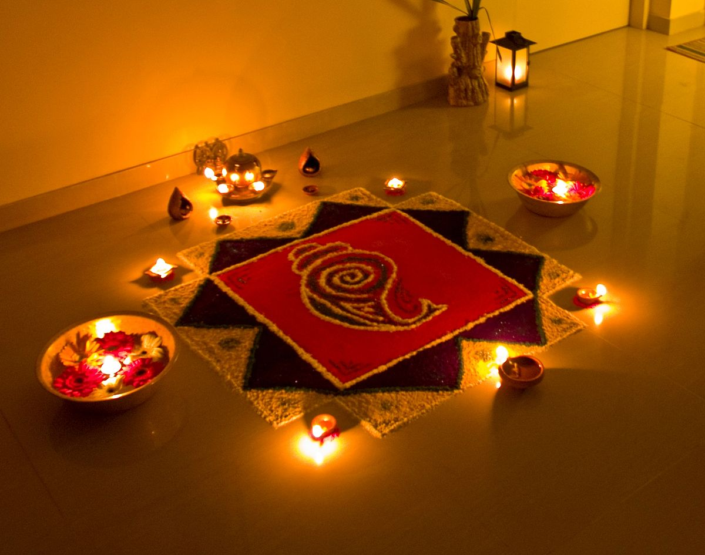

Diwali (also: Deepavali or Dipavali) is one of India's biggest festivals. The word 'Diwali' means rows of lighted lamps. It is a festival of lights and Hindus celebrate it with joy. During this festival, people light up their houses and shops with Diyas (Small cup-shaped oil lamp made of baked clay). They worship the Lord Ganesha for good welfare and prosperity and Goddess Lakshmi for wealth and wisdom. Diwali is festival of lights, it comes around the months of October to November, people clean and decorate their house before the festival.
This festival is celebrated in the Hindu month of Kartikamasam which falls sometime during October or November. It is celebrated to mark the return of Lord Rama from 14 years of Exile and his victory over the Demon Ravana. In many parts of India, Diwali is celebrated for five consecutive days and is one of the most popular festivals in India. Hindus regard it as a celebration of life and use the occasion to strengthen family and relationships. In some parts of India, it marks the beginning of the new year. It is celebrated not only in India but also abroad. The Hindus worship the Lord Ganesha and Goddess Lakshmi during Diwali.
Hindus light up their homes and shops, to welcome the goddess Lakshmi, to give them good luck for the year ahead. A few days before Ravtegh, which is the day before Diwali, houses, buildings, shops and temples are thoroughly cleaned, whitewashed and decorated with pictures, toys and flowers.On the day of Diwali, people put on their best clothes and exchange greetings, gifts and sweets with their friends and family.